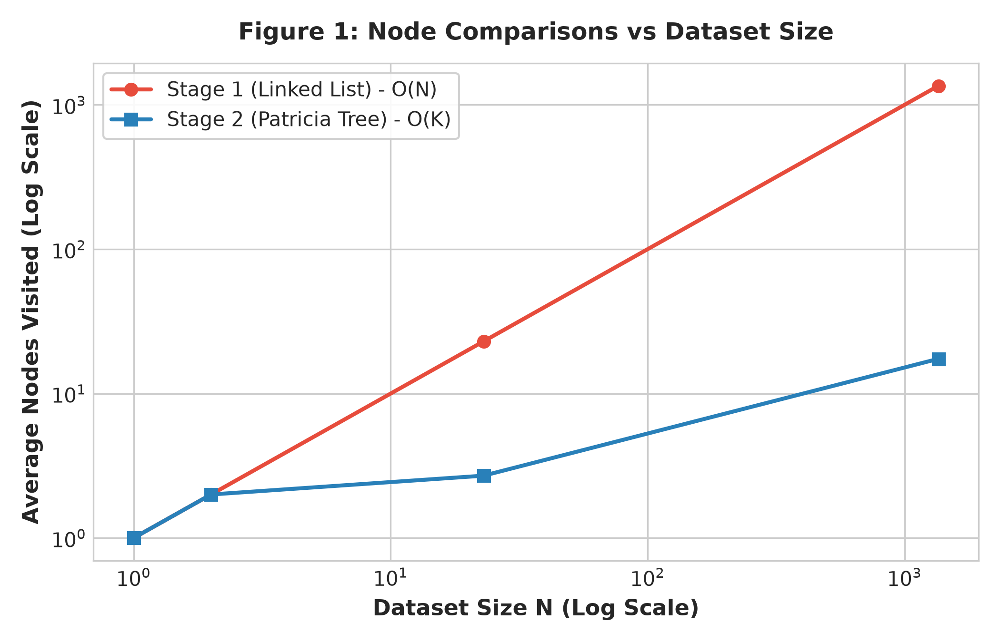
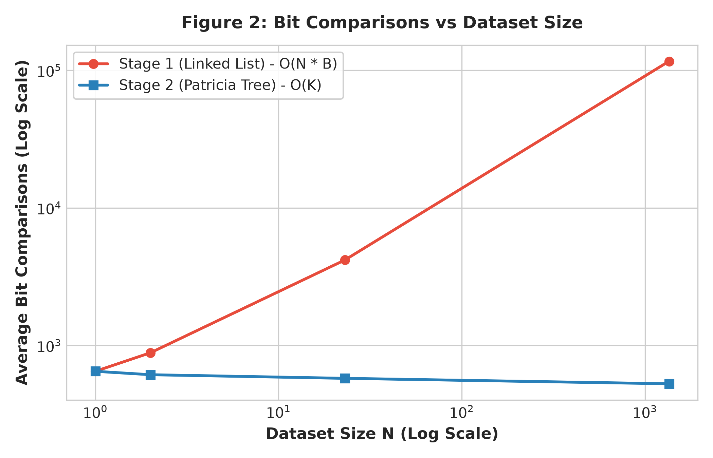
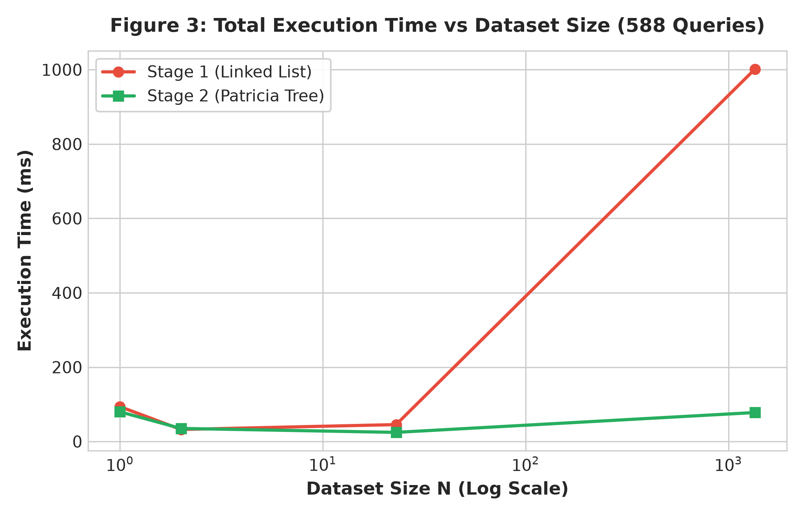

# Patricia Tree Search Performance Report
For a Patricia tree, whether a search is successful or unsuccessful, the worst case is just when you can only figure out the word match at the very last bit. That means the tightest bound for time complexity is O(m), which is linearly dependent on the bit count m of the search key.
On the other hand, the best case for an unsuccessful search is when you can figure out the mismatch in a constant number of bits. Since this doesn't depend on the total length m, the time complexity for this best case is just O(1).
Once we find the correct node using the tree, if there are multiple records with the same key, we just walk down the linked list. If there are k duplicates, this takes an extra O(k) time. But the tree search O(m) is where the main work happens.



From the graphs, we can see that as the dataset gets bigger, the search performance stays flat.
For Stage 1 (exact matching), the `b_count` (bit comparisons) doesn't shoot up at all when we add more words. Also, the `s_count` (string comparisons) is exactly 1. We only check the full string once at the very end.
For Stage 2 (spellchecking), the `b_count` is higher because we have to explore more branches to find similar words. But the line is still pretty flat and doesn't explode.
The data matches the theory.
In the theory part, we said the time is O(m) and only depends on the word's length, not how many words are in the dictionary. The flat lines in the graphs prove this: searching in a 400,000-word tree takes basically the same amount of bit checks as a 10,000-word tree.
Stage 2 takes more steps because spellchecking forces us to check multiple paths, but the tree's core logic works exactly as expected.